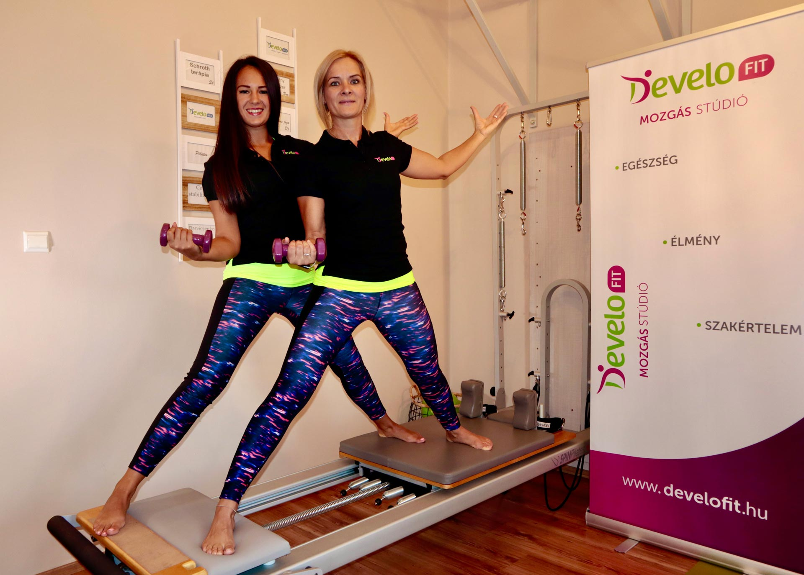
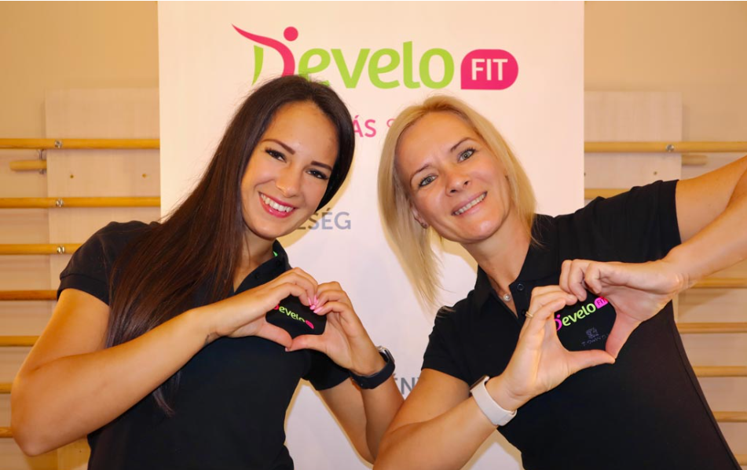
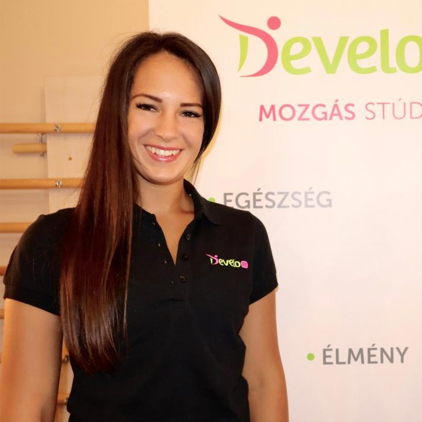

Prekopecz-Farkas Andrea 1997 óta dolgozik szakképzett gyógytornászként.
MOZGÁS · EGÉSZSÉG · EGYENSÚLY
DeveloFit
Mozgás Stúdió
Egészség. Élmény. Szakértelem.
Mozgásszervi panaszok integrált kezelése és egyedülálló alakformáló edzések Győrben. Magasan képzett szakemberekkel és modern eszközparkkal.
Személyre szabott figyelem
kis lépések, valódi fejlődés
kis lépések, valódi fejlődés

Találd meg a saját egyensúlyod
✳Egészségtudatos mozgással
01Figyelem rádminden mozdulat számít
MOVEWELL
GYŐR · MOZGÁSTERÁPIA · FITNESZ— Görgess tovább
01 / RÓLUNK
TÖBB MINT MOZGÁS
Egészségközpontú szemlélet.
Személyes odafigyelés.
ELŐZMÉNYEK
A DEVELOMED Gyógytorna Stúdiót azzal a céllal hoztuk létre, hogy minőségi mozgásterápiás ellátás biztosításával hatékony és szakmai alapokon nyugvó segítséget tudjunk nyújtani a hozzánk forduló gyermek és felnőtt páciensek számára egyaránt.
Prekopecz-Farkas Andrea 2000-ben indította el első magánpraxisát gyógytornászként.
2010-ben álmodta meg és hozta létre a máig családi kézben lévő DEVELOMED Gyógytorna Stúdiót.
2017-től egy többfunkciós gyógytorna stúdió és egészségközpont is működik a helyszínen.

DFMOZGÁS
TUDATOSAN
TUDATOSAN
02 / A MÓDSZER
TUDATOS MOZGÁS, BIZTOS ALAPOK
Ismerd meg a
DeveloFit módszert
Vendégeink újfajta igényeinek megfelelően álmodtuk meg és alakítottuk ki a DeveloFit edzésformát, mely során az alakformálás mellett a prevencióra, a helyes testtartásra helyezzük a hangsúlyt.
↗ Mit és hogyan edzhetek a továbbiakban?
↗ Mit sportolhatok mostantól?
↗ Milyen mozgásformát válasszak?
↗ Mik a tiltott gyakorlatok?
↗ Mit és hogyan egyek a fittségem megőrzése érdekében?
↗ Változtassak a táplálkozásomon?
03 / IDŐPONTOK ÉS ÁRAK
TALÁLD MEG A RITMUSOD
Mozdulj a
saját tempódban.
A DeveloFit óráinkra várunk teljesen kezdőként vagy haladóként is, illetve ha profi-, súlyzós-, konditermi-, futó és egyéb edzéseidet szeretnéd kiegészíteni.
Egyéni óra
10.000 Ft / alkalom
Érdeklődöm → ✳2 főtől
5.000Ft / alkalom
Érdeklődöm → ✳Csoportos óráinkon egyszerre maximum 6 főt tudunk fogadni a maximális figyelem érdekében.
HETI ÓRAREND
Időpontok
Hétfő
16:30
17:30
18:30
19:30
Kedd
5:30
6:30
7:30
Szerda
16:30
17:30
18:30
19:30
Csütörtök
5:30
6:30
7:30
16:30
17:30
18:30
19:30
04 / EGYEDI FEJLESZTÉS
ÚJ ÓRATÍPUS – EGYEDI FEJLESZTÉS
A mozgás új
élménye.
Az elmúlt hónapokban egy olyan újfajta óratípuson dolgoztunk, amellyel még nem találkozhattatok sehol.
A DeveloFit edzésről ↗NEKED VALÓ, HA…✳
Kinek javasoljuk a DeveloFit-et?
Mindenkinek, aki
- A jóga és a pilates órákon nem tud igazán kikapcsolni, esetleg feszeng
- Túl pörgősnek tartja az aerobik/TRX órákat, mégis szeretne feszes izomzatot
- Fontosnak tartja a prevenciót, az ízületek, izmok és porcok védelmét
05 / A SZAKEMBEREK
TAPASZTALAT ÉS TUDÁS
Fitnesz
szakembereink
Nálunk a fitnesz szakember munkáját tapasztalt gyógytornászok és manuálterapeuták támogatják, kihasználva a módszerek és edzések szinergiáit.
GYÓGYTORNÁSZ
Prekopecz-Farkas Andrea
Egy közeli családtag baleseti sérülése indított el a gyógytornász pályán. A kézsebészeti műtétet követően láttam, hogy az orvosi beavatkozás után a gyógytorna mennyire fontos szerepet játszik a sérült kéz „újratanításában”.
Ismerje meg jobban Andit →
FITNESZ SZAKEMBER
Kertai Rebeka
Kertai Rebeka vagyok, rekreációszervező, egészségfejlesztő, edző, jóga és pilates oktató. A gimnáziumi tanulmányaim után nem volt kérdés, hogy egyetemi pályám fókusza is a testmozgás lesz. 2017-ben kiváló eredménnyel végeztem el a rekreációszervező szakot.
Ismerje meg jobban Rebit →